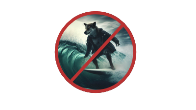
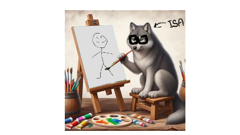
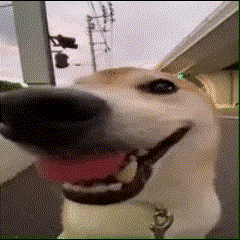

Isabelly é uma jovem de 22 nascida em Nova Iguaçu e que mora atualmente na cidade de Saquarema,
lugar conhecido como a Capital Nacional do surf!
Curiosamente, embora sempre com um pé na água e o outro na areia, Isabelly nunca foi capaz de surfar...

Em contra partida, Isabelly desenha muito bem e gosta sempre de criar
algo novo usando seus dotes artísticos!

Sabemos que Isabelly sabe desenhar, mas quais seriam os
outros hobbies dela? Vejamos alguns:
Tocar instrumentos;
Escrever;
Ver o mesmo filme várias vezes;
Procuras séries interessantes;
Jogar jogos de tabuleiro;
Impressionante! Isabelly parece ser alguém muito legal! Mas para conhecer alguém verdadeiramente, devemos observar uma coisa...
As figurinhas mais usadas no WhatsApp por essa pessoa! Vamos ver o que Isabelly mais tem usado...

Realmente, parece que Isabelly é alguém muito gente fina... e que gosta de gatos.